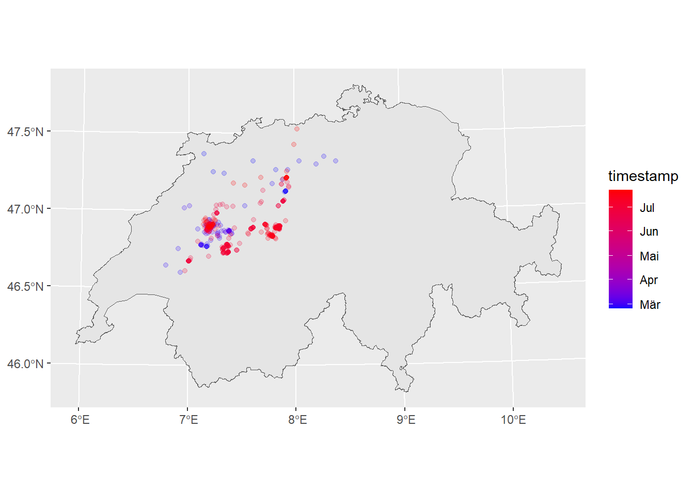
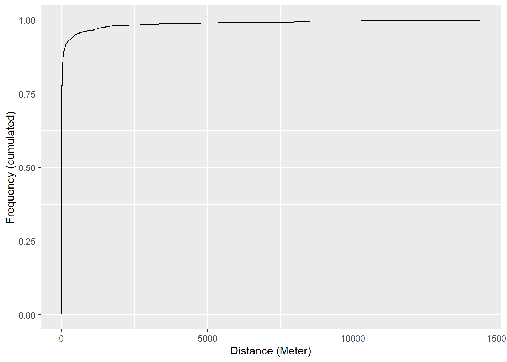
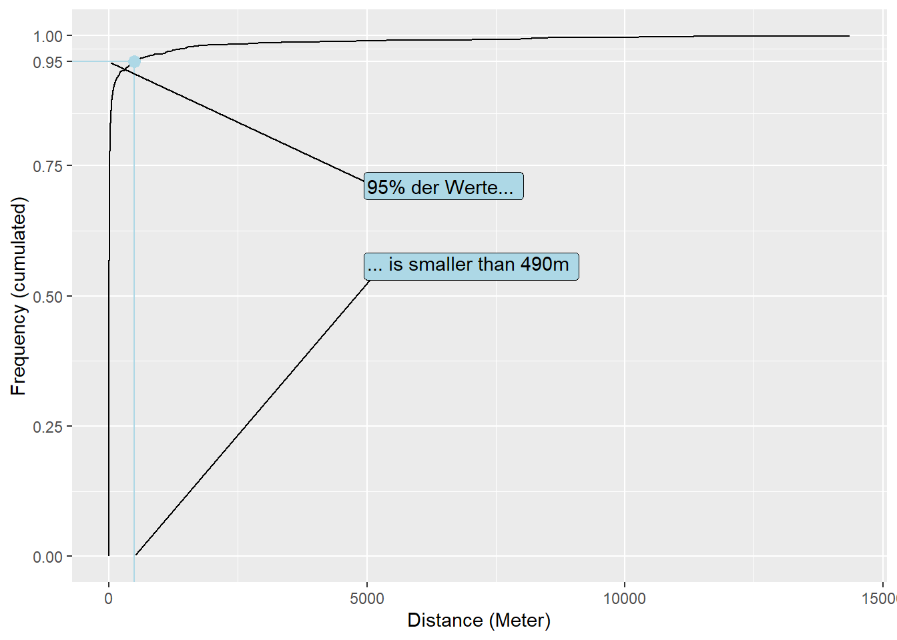
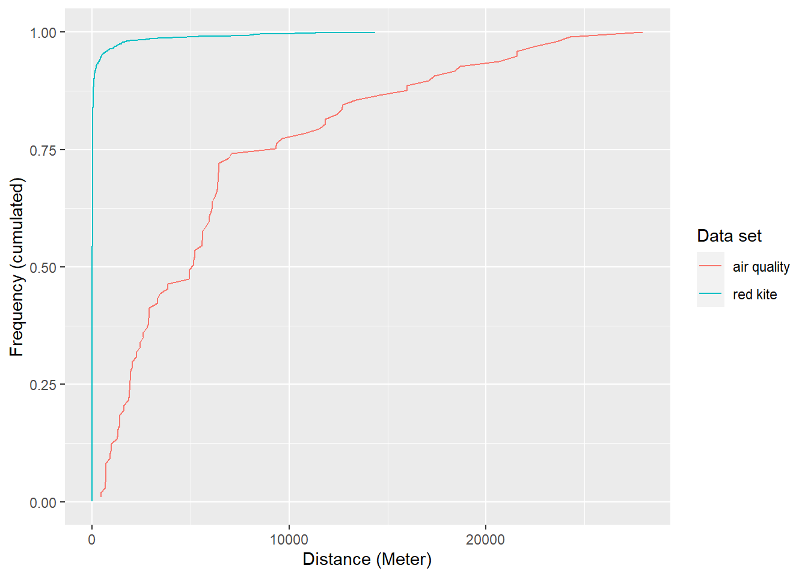

library("sf")
library("dplyr")
library("ggplot2")
red_kites <- read_sf("datasets/rauman/rotmilan.gpkg")
switzerland <- read_sf("datasets/rauman/schweiz.gpkg")
air_quality <- read_sf("datasets/rauman/luftqualitaet.gpkg")SpatAn 3: Exercise C (Optional)
In this optional exercise, we want to calculate and compare the G-function for measuring points in air quality and red kite movements.
Task 1

Task 2
First, we will calculate the G function for the red kite positions:
Step 1
With st_distance(), distances between two sf measurements can be calculated. If only one data record is specified, a cross matrix is created in which the distances between all features to all other features are displayed. We use this function to calculate the nearest neighbours.
Step 2
Now we want to know how far the shortest distance from each point to its nearest neighbour is, i.e. the shortest distance per line. Before we determine these, we still have to remove the diagonal values, because these each represent the distance to themselves and are always 0. Then apply() can be used to calculate a function (FUN = min) over the lines (MARGIN = 1) of a matrix (X = red_kites_distancematrix). In addition, we still have to set na.rm = TRUE so that NA values are excluded from the calculation. The result should be a vector with the same number of values as rows in the matrix.
Step 3
Now we have to sort the distances according to their size
Step 4
Now we will calculate the cumulative frequency of each distance. The cumulative frequency of the first value is 1 (the index of the first value) divided by the total number of values. seq_along provides us with the indices of all values. length provides us the total number of values.
Step 5
Now we want to present the cumulative frequency of the values in an Empirical Cumulative Distribution Function (ECDF). To do this, we first have to put the two vectors into a data frame so that ggplot can deal with them.

Reading

Task 3
Now perform the same steps with air_quality and compare the ECDF plots.
